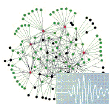
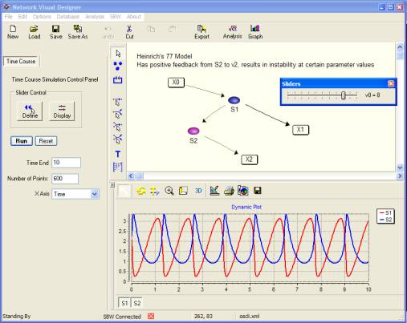
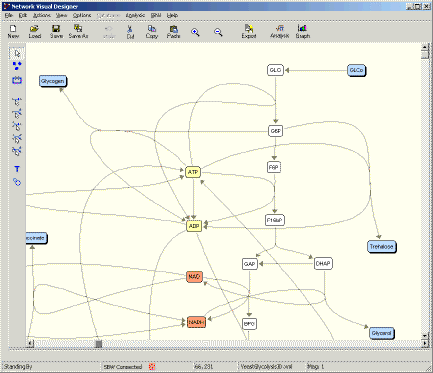
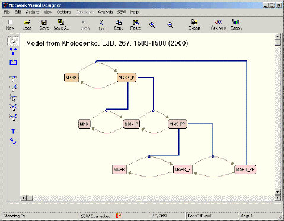
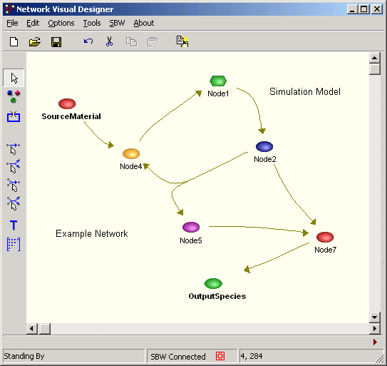

Install JDesigner for Windows (~3.4m)
- Tested on Windows 2000, XP and VMware under Linux (also believed to run on Mac OS using a PC emulator).
Latest update: 1.8k (April 28 2003)
Basic Tutorial - how to run a simulation using JDesigner, SBW and the Jarnac simulation server
View Documentation for JDesigner
View Documentation for the SBW Interface
View Documentation on the SBML annotation extensions for JDesigner
JDesigner is an Open Source
Project distributed under the LGPL license.
Development of JDesigner was supported by the
Kitano ERATO project at Caltech and
more recently
by the Keck Graduate
Institute.
From this page you can obtain the latest version of JDesigner
JDesigner is a Win32
application which allows one to draw a biochemical network
and export
the network in the form of SBML. The Designer has an SBW interface
that
allows it to be called from other SBW compliant modules, for
example Python. In addition,
JDesigner has the ability to use Jarnac as
a simulation server (via SBW) thus allowing
models to be run from
within JDesigner. In this mode JDesigner is both a network design
tool
and simulator. Full binaries and source code is available in the
download.
Latest update: 1.8k (April 28 2003)
YOU MUST USE THE LATEST JARNAC 2.0 for versions 1.8+. When you install Jarnac make sure you RE-REGISTER Jarnac with SBW. Go to the options menu and select register with SBW. Then QUIT and RESTART SBW. To restart SBW, stop it first then restart it (see System Biology Workbench menu in start menu).
Latest update: 1.8k This is a recommended update to 1.8
1.8k
----
Hill coefficients in the builtin rate laws were not
being prefixed with the
reaction name when written to the SBML file. This would cause problems for
models
with more than one hill equation which used the builtin hill equation.
1.8j
----
1.8i
----
1. Version 1.8h inadvertently renamed reactions labels when a model was
loaded.
1.8h
----
1. Product alias nodes weren't working due to a rogue boolean expression.
2. Duplicate reactions names for non uni-uni reaction sorted out as well.
3. Updated OpenXML library to 2.4
1.8g
----
1. The root cause of duplicated reactions identified.
1.8f - never released
----
1. Range check error when node added with regulatory network display on
2. Certain ways of adding reactions caused duplicate names to arise in the
reaction list.
3. Multiple UniUni reactions do not overlay each other when drawn from the
same nodes
4. Changing Species names now prompts user if associated rate laws should
also be changed.
5. Small bug in drawing regulatory network while panning network image
(bug visible when
viewing Calvin cycle).
6. In complex networks with conservation cycles where the stoichiometry
matrix can gets
rearranged, JDesigner was using the wrong information when instructing the
simulator from the
selection output list. Resulted in incorrect initialization, potentially
leading to
mass conservation violation. This bug became apparent when testing SBML
files from the SigPath site.
7. Potential for access violation when closing down JDesigner has finally
been plugged!
Caused by a race condition between the SBW issuing notifications and
JDesigner closing
down. I hope there are no more of these, they look bad but they're fairly
harmless.
1.8e - never released
----
1. Range Check error when regulatory network display was on and user added
new nodes or edges.
1.8d
----
1. Reset button sometimes screwed up and reinitialised wrong nodes
2. Pictogram option wasn't quite working correctly.
3. Parameter scans and control coefficient selections didn't include
boundary conditions as one of the parameter types.
4. Added multiselect to the selection box
You must download Jarnac
2.0 >#1 if you intend to use 1.8d as >#1 has an enhanced
SBW interface which is required by this version.
1. Added Control coefficient and elasticity evaluation
2. Fixed a number of access violations and further tidying up of the interface.
Version 1.8
There are significant changes in this release.
1. The node and edge property forms have been completely
reworked. These
forms (activated by right clicking over an edge or node and selecting
properties), are now dockable on either the left or right of the main
form. This allows users to select nodes and edges one after the other
and the property forms will update themselves to reflect the currently
selected object. In addition, to facilitate this, the keyboard short-cut,
ALT will cycle through node and edge objects. Each time a node or edge is
selected, it's properties may be edited. These changes makes it much
easier
to edit the details of models.
2. The user interface edge property form has been partially redesigned.
The
most noticeable change is much better support for built-in rate laws. The
form
has two tabs, one for built-ins (default) and another for free format
rate laws.
3. The time course simulation control panel has been enhanced so that
users
can
select what variables should be passed to the plotter panel.
4. The time course simulation control has also been enhanced to enable
simple
parameter scans to be carried out.
5. A new analysis panel is supplied. This is a steady state analysis panel
which
not only computes the steady state but also gives an indication to the
state's
stability. Also includes a simple parameter scanning facility. No slider
control yet,
they will come in a later version.
6. Jdesigner now fully supports the ability to simulate multiple models.
Users
can now, in a single session, maintain and analyse multiple models in
separate
windows. This facility requires the latest version of Jarnac (Full 2.0
release)
because it employs a new service API.
7. A second output panel has been introduced, this is a simple text output
window, useful for just collecting raw numbers from simulations etc.
8. You can now select what the simulator will return to JDesigner, by
default all
species concentrations are returned to JDesigner. However the
selection panel
permits a user to choose what they'd like returned, eg
species, fluxes and even
eigenvalues for steady state analysis. The selection choice will be
increased with
later versions
Version 1.70b
1. Multiple window support (MDI model). cut/copy and paste
between windows.
2. Two new reactions, BiTri (A + B -> C + D + F)
and TriTri (A + B + C -> D + E + F).
From 1.7 to 1.7b (fixes and additions):
1. Added TriUni and UniTri to complete reaction set.
2.
Text not positioned correctly when double clicked and scroll bars
moved
3. Changes to edge detection algorithm resulted in very small
errors in edge detection for destination arcs.
4. Some multi-arcs not
correctly imported, introduced when new arc types were
introduced.
Latest update: 1.65b - Lots of
changes
Bug fixes including:
1. Moving reaction arcs with
control key was not working correctly
2. Text scaling on text objects
not correct because text objects
in correctly used non-true type
fonts.
3. Save to metafile brings up save dialog box
4. Previous
versions were not saving the background colour to the SBML
5. Print
Preview was not quite matching actual print out, now it does
6.
Printing of text objects was not working
Printing from JDesigner now works
well. If you have Acrobat you can install the PDF
printer driver, this
will allow you to generate PDF files of the pathway images, very
handy
for publication etc.
New features:
1. Selection box
added, drag with mouse while holding mouse left mouse
button to select
a group of nodes and reactions.
2. Add notes to model, species,
reactions and compartments
3. Allow use of keyboard cursor keys to move
selected objects.
4. An initial release of functionality to support
cut/copy/paste
5. Export Scamp scripts
6. Added popup menu on the
drawing canvas to set colours and add models notes
7. Notes many now be
added to individual nodes and reaction arcs
8. The beginnings of a
MSHTML help file
9. Displaying regulatory networks has been improved,
see BorisEJ.xml for example
(see screenshot below).
Latest update: 1.62a
- Printing was not working correctly, now fixed, a very
rudimentary
print preview added. A couple of issues with magnification
of images fixed which also
caused problems with printing. Support for
loading the old binary network files has now
been completely removed.
If you still need to load these binary files then use version
1.61g. If
you need to load them into later versions save them as xml files. Fill
colors can
now be specified for nodes if they have a border (see node
properties dialog box). Still
problems with printing if pictograms are
used in the diagrams, trying to fix this one, might
be a bug in the
printer driver. File Drag now uses sbml files rather than the dat files
(drag
an sbml file on to the jdesigner canvas and it will load
it).
Sample Models:
Here are some JDesigner compatible models (These are SBML
models and will load into
ANY SBML compliant application, eg
Gepasi):
- Positive Feedback Oscillator From
Heinrich et al 1977 review on metabolic
regulation - Single Gene Feeback Oscillator From SBML Bioinfomatics Standards Paper
- Negative Feedback in MAPK From Boris Kholodenko, EJB, 267, 1588 (2000)
The following were taken from the Gepasi site at http://www.gepasi.org/ to illustrate the
ease
with which it is now possible to interchange models between
different simulators. The
SBML models at www.gepasi.org were loaded
into JDesigner, and the networks were adjusted by hand so that the
networks were more ordered on screen.
Taken from the Gepasi site and modified for
JDesigner display, see
http://www.gepasi.org/ for
details.
- Yeast Glycolysis. From Pritchard and Kell (2002) Eur. J. Biochem. 269, 3894-3904
- Signal Transduction Cascade.
- The Henri-Michaelis-Menten model
- Minimal chemical Hopf bifurcation
1.61g - ratelaw.ini is now searched for in the
application directory (caused problems if
JDesigner was installed on a
network for multi-users). Download this version if you need
to load the
old binary data files.
1.61e - Fixed possible access violation when starting JDesigner is SBW wasn't installed.
1.61d - Further tinkering with the
source distribution. The only change to the exe is that
when using
simple mass-action rate laws, the rate constant name is
appended with the
reaction
name.
1.61c - two small problems fixed, array color over flow when there are more than 10 species to plot, and a minor bug introduced in the last build. Many thanks to the person who spotting these errors.
Latest update, 1.61d - no bug fixes, just added instructions to enable people to compile JDesigner from the source, if they so wish. Note that JDesigner is ready compiled and unless there are special reasons there is NO need to recompile JDesigner, but the option is there if you need to.
Printing support added. You can now print
networks at high resolution. A magnification option is provided to scale
the network to the output page. Networks can also be saved
as windows
metafiles.
Mulitiselect of objects is now supported. This allows groups of objects to be moved simultaneously, or deleted simultaneously. Some basic alignment tools have also been added and will probably be further enhanced in future versions. Movement of whole groups of objects is achieved by selecting the group then holding the control key down while dragging the group with the mouse. See documentation for further details.
Full native support for loading and saving models as SBML. See SBML Extensions for details.
NOTE: If you want to do simulations using JDesigner, you must download the Systems Biology Workbench and Jarnac. In addition Jarnac must be registered with SBW. To use Metatool with JDesigner you must download the SBW metatool interface components.
Latest update: 5 Sept, v1.61, lots of changes:
1. Multiselect nodes, reactions and other objects.
Latest update: 26 August, v1.6. Read and write models in native SBML. Better support for simulation via SBW.
Latest update: 14 July, v1.51b, added experimental support for saving and loading of models using SBML. Also added experimental simulation interface which uses SBW to access the simulation services provided by Jarnac 2.0. If you want Jarnac 2.0 is automatically start when you request computational capability, make sure you register it first (see options menu in Jarnac 2.0) otherwise you'll have to start it by hand, in server mode if desired. To request computational capability, select the menu options and choose 'connect to simulator', if this was successful the run toolbar button will become enabled. Click this button to bring up the simulation gui
Latest update: 20 June, v1.4e, fixed a problem with parameter value assignment
Latest update: 26 May 2002 (Latest version 1.4b adds compartmentation). Version 1.4 had problems if SBW wasn't installed on your machine, 1.4b has fixed this unnecessary dependency.
New version 1.4c, fixes a few
annoying problems. Now has a save as toolbar button, screens rate laws
more carefully, setting arc thickness now works!
Screenshot of JDesigner:
 

Download JDesigner Installer (includes src).